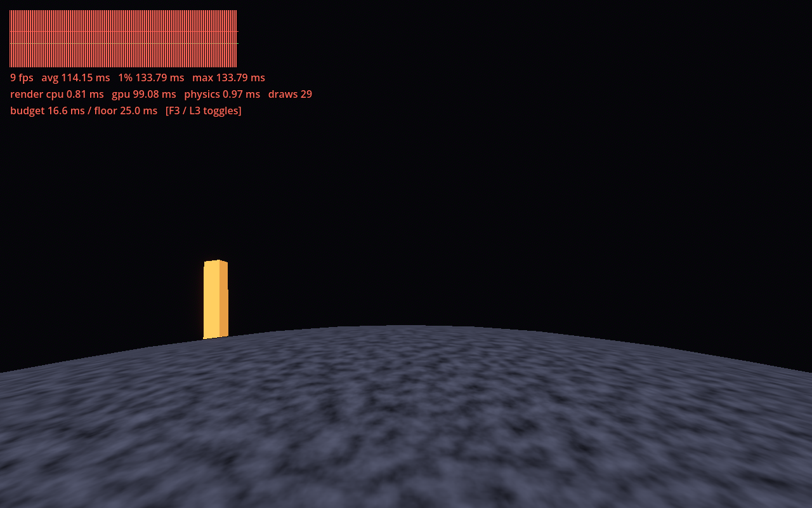

| Gate | Result | Detail |
|---|---|---|
| Rust unit tests | PASS | 15 of 15 (gravity, motion, placement, frame stats) |
| Data-file validation | PASS | 3 of 3 RON files parse (included in the 15) |
| Scripted test scene | PASS | sphere_walk_smoke.gd: 80 simulated s walking; radius 60.90 to 62.83 m (surface 60 m, includes a jump); upright error 0.08 deg |
| Determinism tests | NOT RUN | No seeded systems exist yet (RunSeed is Phase 1) |
| Smoke test (boot to menu, 60 s bot) | NOT RUN | No menu or bot framework yet (Phase 1) |
| Screenshot regression | NOT RUN | No approved baselines. One screenshot below for your review |
| Autoplay bots, fun proxies, balance simulator | NOT RUN | Systems they need don't exist yet |
| Steam Deck session and rubric | NOT RUN | Needs Matthew's Deck |
Open: none known. Fixed during the step: B button freeing the mouse (it was bound to Godot's built-in ui_cancel); planet surface rendering too dark.
Steam Deck: not measured. The only rendered run was in a cloud container with software rendering (no GPU), which is not representative, so no number is reported against the budget.

Rendered with Forward+ on a software Vulkan driver. Everything visible is a labelled placeholder and fails the section 11 art bar on purpose.